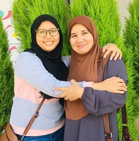
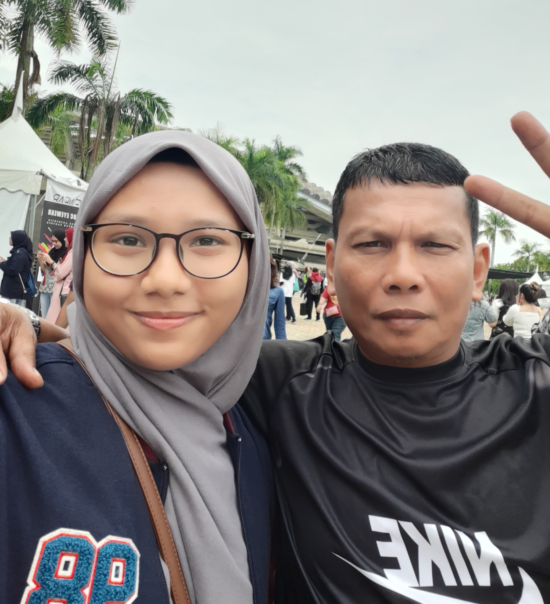
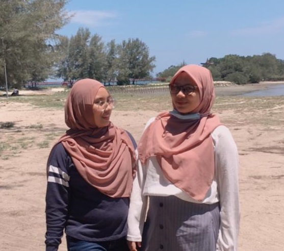
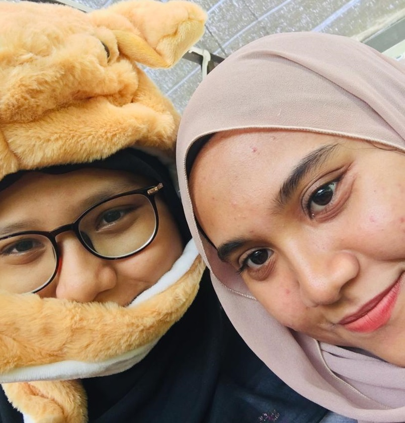

| MOTHER | Nor Hanim binti mohd ali is the name of my mother. Born in July 1966, she is currently a retired teacher. She has five sibling 2 older brother, 1 younger sister and 1 younger brother. She was raised in Batu Gajah, Perak. She took STPM before continuing study in UPM. She got married in 1992 and got my oldest sister in 1994, my second sister 1995, my third sister in 1997 and me in 2000. She works at Methodist Girls School for almost 20 years before moved to Tarcisian Convent in 2019. |
|---|
My father is Amir Ruddin bin Kamaruddin, age 54, born in 1997. he is an army veteran. he also born and raised in Batu Gajah, Perak. He is the oldest of 6 siblings. |
 FATHER |
|---|
| OLDEST SISTER | This is my oldest sister, she is 6 years apart from me. All of my sisters went to the same school (Methodist Girls School). We were never that close. However, she always buys me and my sisters gifts and present. She is working as an auditor at KPMG. She is always a straight As students and even got JPA Scholarship. She doesn’t really like to brag about the fact that she study abroad. |
|---|
This is my second sister. She was born in 1995, thus making her 5 years older than me. Compared to all of my sister, she is the one that I am close with. That’s because she is the only one that isn’t arrogant, and somewhat kind. She graduated in entrepreneurship at UiTM Puncak Alam for her degree. |
SECOND |
|---|
|  THIRD SISTER | This is my third sister, she is older than me by 3 years. Among all of my sister, she is the one I always had argument with. She studies investment in UiTM Segamat. She is the one that always do business and very creative person. She likes to do editing and videography. She also likes to borrow my stuff and that is very annoying to me. |
|---|